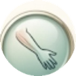
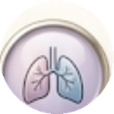

Bloqueio Regional
Guiado por Ultrassom
24
Bloqueios
3
Categorias
Doses

Membros Superiores
8 bloqueios
I
Plexo Braquial
IA
Interescalênico
IB
Supraclavicular
IC
Infraclavicular
ID
Axilar
II
Plexo Cervical
III
Nervos Distais (Mediano, Ulnar, Radial)
IV
Intercostobraquial
Membros Inferiores
12 bloqueios
I
Plexo Lombar e Sacral
II
Fáscia Ilíaca Supra-Inguinal
III
PENG
IV
IPACK
V
Geniculares
VI
Femoral
VII
Cutâneo Lateral Femoral
VIII
Obturador
IX
Canal dos Adutores
X
Ciático Alto
XI
Ciático Poplíteo
XII
Pentabloqueio (tornozelo)

Paciente Pneumopata
4 bloqueios + tabela do frênico
★
Paralisia do frênico (visão geral)
1
Tronco Superior
2
Supraescapular Anterior
3
Supraescapular Posterior
4
Nervo Axilar